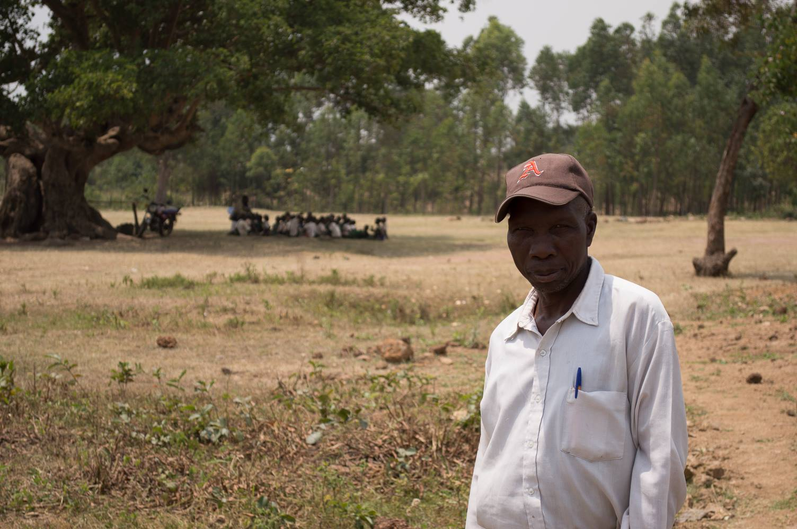
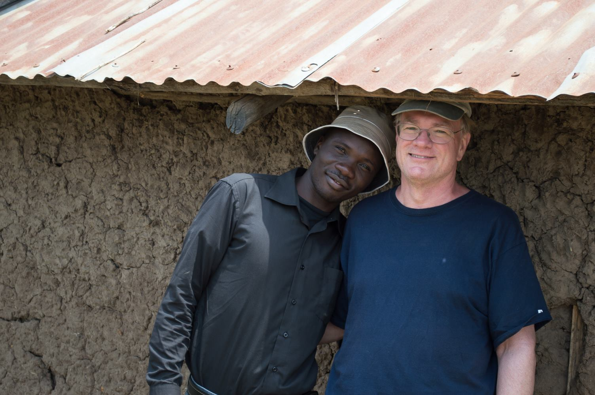
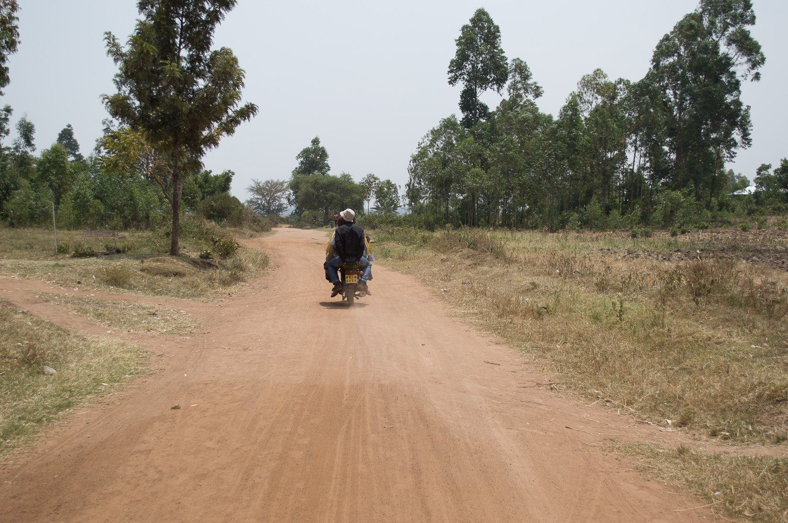
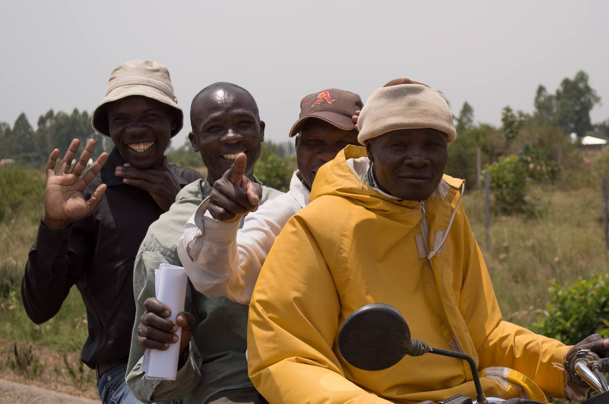

Kenya's urban/rural divide
POSTED 24 FEBRUARY 2014
Life in Kenya is a tale of two worlds. On the one hand you have the bustling cities of Nairobi, Mombasa, Kisumu, Nakuru, and others where about a third of Kenya's 43 million people live. Life in these cities is fast, crowded, and loud. On the other hand you have vast areas of rural towns and villages where the remaining two-thirds of Kenyans live. Life in these areas is slow, quiet, and peaceful. Urban dwellers typically have access to running water, electricity, transportation, grocery stores, movie theaters, and most of the modern amenities you might expect (the exception is the portion of people living in urban slums). In rural areas however people often fetch water 20 liters at a time, they depend on subsistence farming for food and a modest income, and their primary mode of transportation is by foot or bicycle.
Learning about the urban/rural divide has been one of the most fascinating elements of my Kenyan experience. While living here I've had the privilege of enjoying the best of both worlds. In Nairobi I share a house in which I have electricity, running water, and a kitchen with modern appliances. There is a cafe near where I live where I can order a cheeseburger and connect to the internet. However, having grown up in a relatively small town, city life can be overwhelming. So about once a month I leave Nairobi to visit Lela, the village I worked in as a volunteer for Engineers Without Borders. In Lela I can relax in peace and quiet. The trade-off is that I give up the convenience of modern life, using a pit latrine instead of a toilet and bathing using a bucket instead of a shower. Rural farming is done using the labor of humans and cattle instead of heavy machinery:
My host in Lela, Charles Olang'o. In the background, a class from the Lela Primary School is taught under the shade of a tree.
I was joined on my most recent visit by my good friend Paul (Charles' son) and our friend Jeff, who was a professional mentor to our EWB chapter for two years.
Most rural roads are not paved. Motorcycles, or "pikipikis" in Swahili, are very popular.
It is common to see as many as four people on one motorcycle.
Without the obstruction of buildings and city lights, beautiful sunsets are an everyday occurrence.
Village life brings its own set of hardships, but living in the city can be difficult as well. I had a conversation with a taxi driver recently, who told me about the dilemma many young people face. In the city the cost of living is high and getting a job is difficult. But in rural areas where the cost of living is low, job-providing industries are rare. The driver said some of his friends left Kenya to work in the oil industry in the Middle East, where they make about $350 a month.
This urban/rural divide defines life in Kenya. When a Kenyan speaks of their home, they are referring to the part of the country they come from. Your home indicates which of Kenya's 42 tribes you belong to as well as the mother tongue that you speak (in the cities Swahili and English are dominant). Important ceremonies such as weddings and funerals typically occur back home in the village. And after a career in the city, many people retire to live "upcountry", supported by young people sending money back home to their parents and grandparents. This divide is also carried over into politics, since politicians are almost exclusively elected by members of their own tribe (the post-election violence in 2007 resulted from a dispute between members of competing tribes represented by the two leading candidates).
The trend of urbanization (about 5% of the population per year) promises to bring change to Kenya. It will be interesting to see how culture, politics, and Kenyan society as a whole reacts in the coming decades.